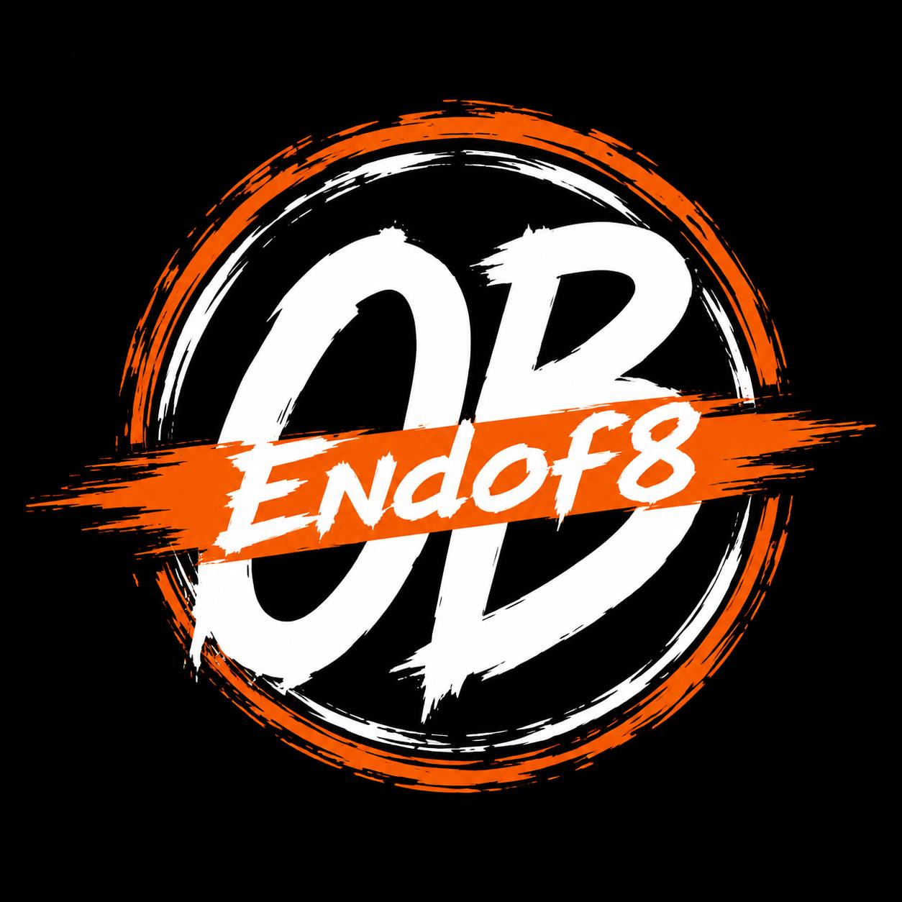

END
OF
8
OF
8
DROP 01 / TEE

OB NOW ↘OCEAN BEACH · SAN DIEGO · CALIFORNIA
Endof8 is an independent home for the stories, people, alerts, art, and weird little facts that make OB impossible to flatten into a postcard.
01 / THE SIGNAL
Fresh links and context from independent local reporting, official city notices, and public community channels. Open the source to read the full reporting.
Follow the latest local reporting and community discussions directly at the original source.
OPEN OB RAG ↗Official news releases and public information from SDPD. Reports are linked as published—never rewritten as rumor.
VIEW SDPD UPDATES ↗Track District 2 updates, public meetings, services, and constituent resources affecting Ocean Beach.
OPEN DISTRICT 2 ↗Endof8 is an independent aggregator and cultural project. Headlines and updates remain the property of their original publishers. We link out rather than copy full articles.
02 / SOURCE DESK
Bookmarks for useful signals—not a feed pretending every post is verified. Social posts can be timely; official reports and direct reporting carry more weight.
COMMUNITY DESK
Got a tip, event, local opening, flyer, cleanup, closure, or story lead? Send the original link and context. We verify before posting.
SEND A TIP ↗03 / END OF 8 GOODS
First merchandise is being developed. Every piece will be clearly marked live only when a real product, size run, price, and checkout are verified.
DROP 01 / TEE
DROP 01 / CAP
DROP 01 / PRINT
No fake cart. No placeholder payment flow. Join the drop list when real stock and checkout go live.
GET DROP UPDATES ↗